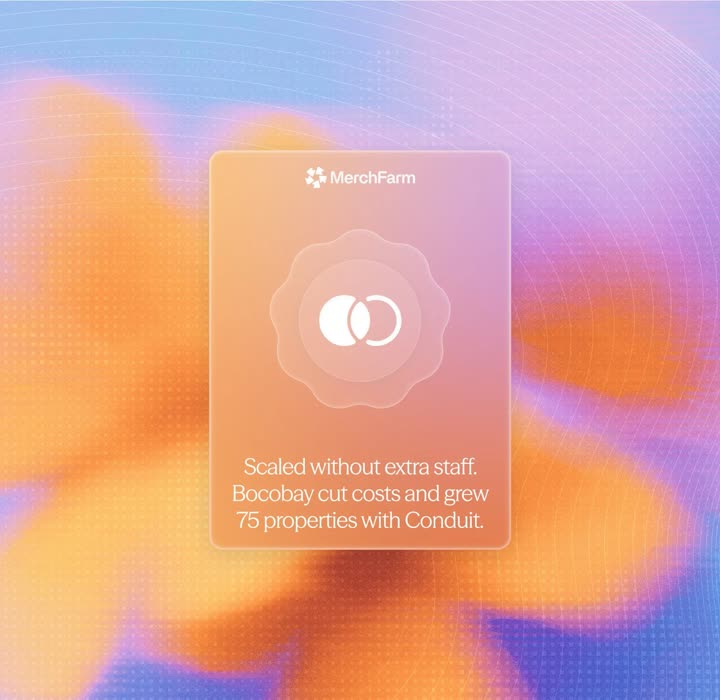
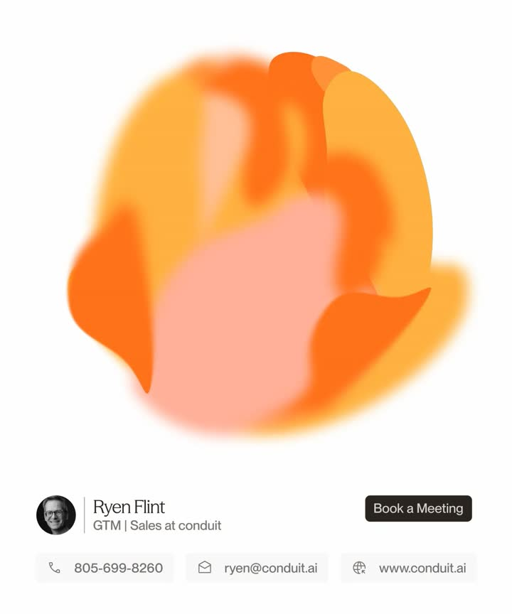

← All interactions
soft + fluid systems
What it is
Static comp: frosted-glass testimonial card ('MerchFarm', scalloped badge with interlocking-rings logo, quote) floating over a soft fluid gradient field - orange/violet blobs with faint topographic contour rings and fine halftone grain.
Media


Frame-by-frame


image
Square comp: dreamy fluid background (large soft orange and purple blobs, blue-lavender base, thin white contour circles upper-left and right edges, halftone dot texture). Centered vertical glass card: MerchFarm logo row, large scalloped seal containing two interlocking rings, and a 3-line quote 'Scaled without extra staff. Bocobay cut costs and grew 75 properties with Conduit.'
Mechanics
trigger
static comp
elements
fluid gradient background, contour line overlays, glass card, scalloped seal
properties
blur/translucency, blob gradients
timing
n/a
easing
n/a
loop
n/a
Build prompt
Recreate this soft-fluid brand comp. Background 1080x1080: base linear gradient (periwinkle top to lavender), 3-4 huge radial blobs (orange #FF9A3D, violet #A78BFA) with 80-120px blur, then overlay thin white contour circles (1px, 8% opacity) as if a topographic map, plus a fine halftone dot grain (2% opacity). Card: 420x520 frosted glass (white 12% fill, backdrop-blur 24px, 1px white/25 border, radius 28px), centered. Inside: logo row (16px mark + 'MerchFarm' 15px), a scalloped seal ~180px (SVG path: circle modulated by 12-lobe sinusoid, white 15% fill, 1px white/30 stroke) containing two interlocking white rings, then the quote in 22px/1.35 white with the brand line emphasized. If animating: drift the blobs on slow 20s noise paths and parallax the contour rings at 0.3x pointer.